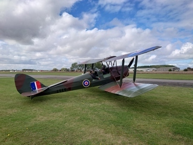
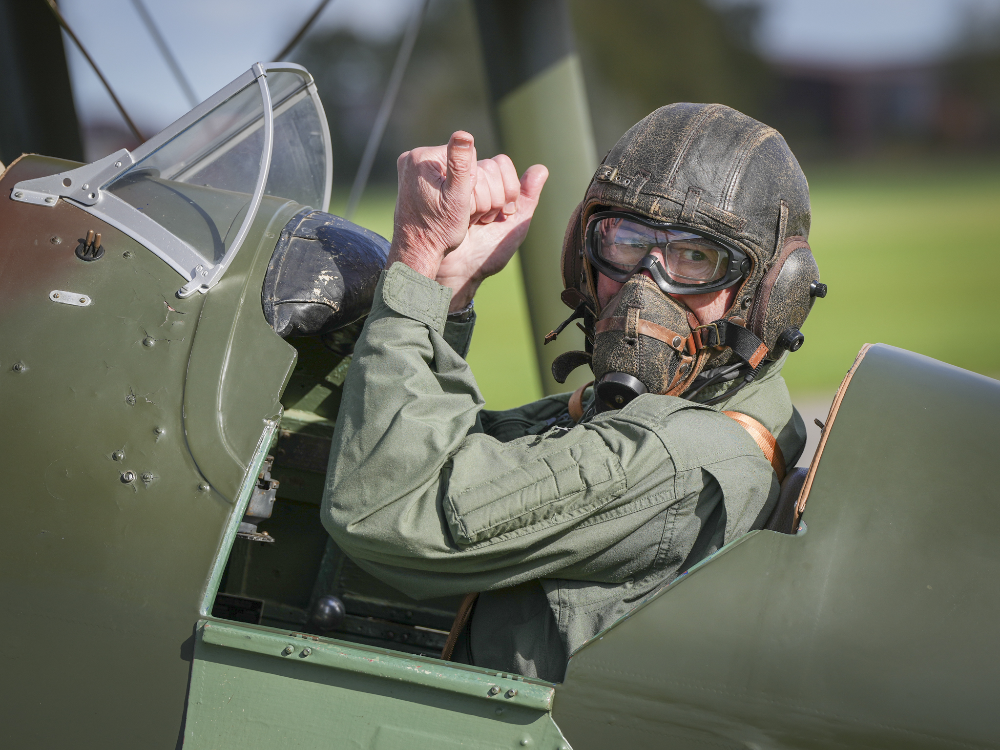

If you have ever wanted to try open cockpit flying, or experience taking the controls of a genuine WWII RAF trainer, now is your opportunity to do so at Breighton Airfield.
Flights
- Trial flights: experience the excitement of open cockpit flying.
Click here to book trial flights.
-
- Flypast: make your event special with a classic 1939 biplane flypast.
Email alison@tigermothacademy.co.uk to secure your date and find out more.
-
- Training: through York Flying School we are able to offer a variety of courses using the Tiger Moth. These include conversion, taildragging, aerobatic and NPPL training. Book direct at York Flying School.